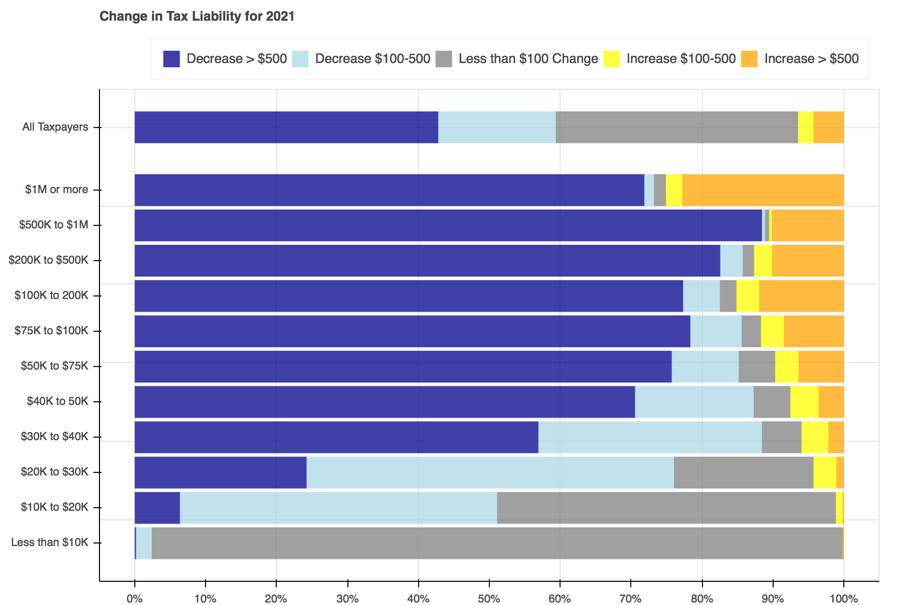
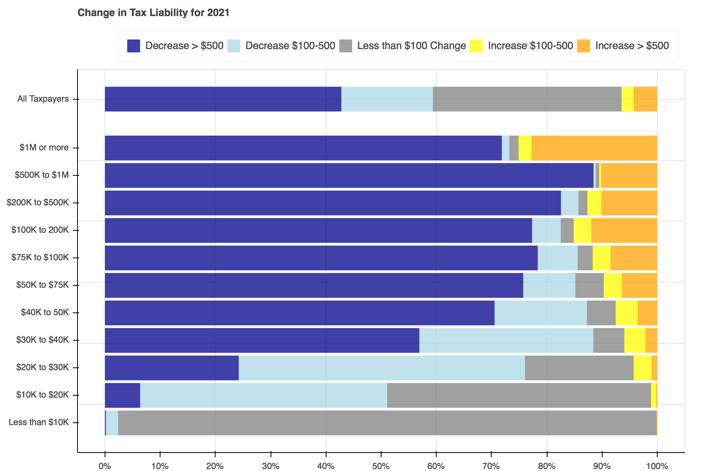

December 30, 2017
Visualizing the TCJA with Bokeh
Throughout tax reform season a seemingly endless stream of tables, plots, and charts filled Twitter to show the distributional effects of the Tax Cuts and Jobs Act. I particularly liked Jonathan Schwabish’s piece on how he created a graph to make a report by the Joint Committee on Taxation (JCT) more engaging. I decided to recreate his work using Bokeh and the open-source Tax-Calculator.
The following work was conducted using Tax-Calculator version 0.14.3 and Bokeh version 0.12.13.
The first step is to create two calculator objects - one for the baseline (current law), and one for the reform. If you’re working directly with the source code, there is a folder in the Tax-Calculator that contains JSON files representing a number of reform provisions including the TCJA. If you’ve downloaded the taxcalc package via Conda, you can download these files on GitHub.
Tax-Calculator requires a representative dataset of tax-units. As a core maintainer of Tax-Calculator and the supporting TaxData repository, I have access to the IRS Public Use File (PUF), which is what I used here. If you do not have access to the PUF, Tax-Calculator comes with a similar file derived from the Current Population Survey. To use this file, replace rec = tc.Records(data='../Tax-Calculator/puf.csv') with rec = tc.Records.cps_constructor().
Two functions will be used to create the plots. The first, find_perc, is used to find what percent of tax filers face each change in tax liability and then the left and right edges for each section within the bars.
The second, plot, contains all of the logic needed to create a plot for each year.
Creating the plots was simple enough. First a Bokeh figure is created, then it is populated with stacked bars for each income group. Each of the bars is made up of five hbar glyphs stacked together.
When working with hbar glyphs, you need to specify the y location; height (thickness); and left and right edges of each bar. My y-axis placement decisions were arbitrary. As in Schwabish's piece, I wanted the bar for all tax filers to be placed slightly higher than the others, but that's all I took into consideration. You could change the location and spacing to be whatever tickles your fancy.
For formatting, I used the Bokeh's visual styling capabilities. The FuncTickFormatter allows you to use Javascript or a Python function to format the y-axis labels. I'm not comfortable working with Javascript right now so I defined a Python function - ticker - that returned the label I wanted based on the y value of each bar. There may be a more elegant way to achieve the same results, but this was a quick and easy solution. It should be noted that if you want to format the axes with a Python function, you will also need to install Flexx (conda install -c bokeh flexx).
Once the functions have been defined, all that is left to do is loop through each of the years, advancing both calculators a year at a time, and pass the data needed into the plotting functions.
 


Resources:
Last Updated: December 30, 2017
Tweet